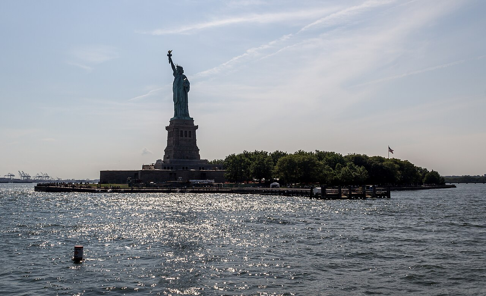

Scholarships to Study in the USA for International Students
Last updated: October 2026. Fulbright rules and deadlines differ by country. Verify yours with your country's administrator before applying.

The USA has no single central scholarship portal the way Europe has Erasmus Mundus. Instead, its flagship route — Fulbright — is run country by country, which means the "USA scholarship deadline" you see online is almost always wrong for your country. This page explains the structure, so you apply to the right office with the right tests, and covers the short exchanges that sit alongside the degree programme.
Fulbright Foreign Student Program: one programme, many doors
The Fulbright Foreign Student Program, run by the US Department of State, funds master's and PhD study at US universities. In each participating country, a binational Fulbright commission or the US Embassy administers applications, sets the deadline, and decides test requirements and field restrictions. Two examples show how different the doors can be:
- Pakistan — USEFP: the 2027 cycle opened 20 February 2026 and closed 1 April 2026. Applicants need the GRE General test (at least 145 in each section, per USEFP's published rule) and a 16-year education for a master's or 18 years for a PhD. TOEFL is required only for shortlisted or selected candidates, and IELTS is not accepted. Full guide: Fulbright Pakistan via USEFP. Official site: usefp.org.
- India — USIEF: a different administrator with different categories, including a Master's programme, Doctoral Research, Postdoctoral Research, and the Kalam Climate fellowship. The India Master's programme has its own marks and work-experience rules and its own deadline — check usief.org.in, not USEFP, for India.
If your country has no Fulbright commission, the US Embassy in your country is the place to ask. Never trust a deadline printed without a country attached to it: the frequently quoted 6 October date, for example, belongs to the Fulbright U.S. Student Program for American citizens, not to international applicants.
What Fulbright covers and what it expects
Fulbright awards typically cover tuition, a living stipend, health coverage and travel. In return, most Fulbright grants carry a home-residency expectation: after completing the degree, grantees are expected to return home and contribute there, and some grants carry a formal two-year home-residency requirement tied to the J-1 visa. Read the terms your country's administrator publishes for your cycle — the requirement and its waivers vary. Selection weighs academic record, the quality of your study plan and essays, and references, not only test scores.
Short US exchanges alongside the degree route
If you are an undergraduate student leader rather than a graduate applicant, the Study of the U.S. Institutes (SUSI) is a fully funded five-to-six-week summer institute at a US university, applied for through the US Embassy in your country. For Pakistan, applications for the 2027 cohort opened in autumn 2026. See UN internships and SUSI 2027. One warning that still matters: Global UGRAD-Pakistan ended around April 2025. Old UGRAD posts still circulate; do not apply through them.
Planning a USA application
Start a year ahead: identify your country's administrator, note its deadline and test rules, and prepare your GRE or English evidence early, since test seats and score reporting take weeks. Write your study objective and personal statement for the specific field and programme you want — the same discipline as a scholarship SOP applies: specific story, specific fit, specific plan (see our SOP guide). And remember the golden rule of American applications: the country administrator's page is the truth; everything else is commentary.
One more caution: deadlines can differ between categories inside the same country programme, so a date you saw for one fellowship category may not be the date for yours. Always open the category page that matches your level and field, and confirm its deadline separately rather than assuming one national date covers every category.